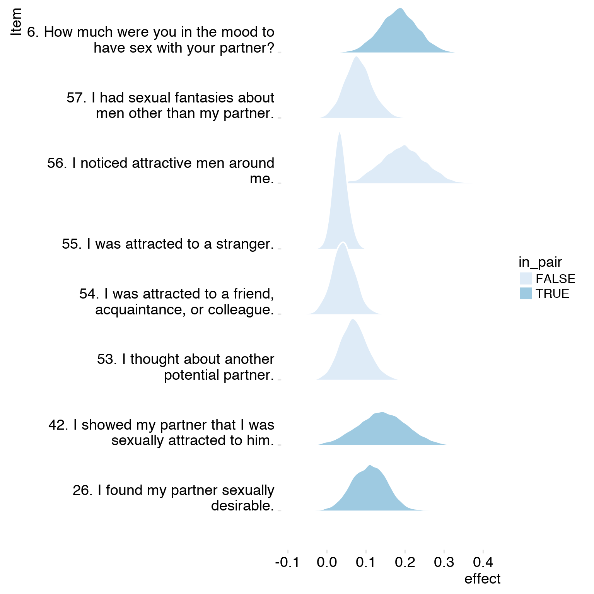

Cycling women (not on hormonal birth control)
Women on hormonal birth control
# cd /usr/users/rarslan/relationship_dynamics/ && bsub -q mpi -W 48:00 -n 20 -R span[hosts=1] R -e "filebase = '3_fertility_robustness'; x = rmarkdown::render(paste0('3_fertility_robustness','.Rmd'), run_pandoc = FALSE, clean = FALSE); save(x, file = 'rob.rda'); cat(readLines(paste0(filebase,'.utf8.md')), sep = '\n')"
library(knitr)
opts_chunk$set(fig.width = 8, fig.height = 8, cache = T, warning = T, message = F, cache = F)source("0_helpers.R")
load("full_data.rdata")
diary = diary %>%
mutate(
included = included_all,
fertile = prc_stirn_b_squished
) %>% group_by(person) %>%
mutate(
fertile_mean = mean(fertile, na.rm = T)
)
opts_chunk$set(warning = F)
library(Cairo)
opts_chunk$set(dev = "CairoPNG")
diary$age_group = cut(diary$age,c(18,20,25,30,35,70), include.lowest = T)models = list()
models$extra_pair_desire = lmer(extra_pair_desire ~ included * (menstruation + fertile) + fertile_mean + ( 1 | person), data = diary)
models$in_pair_desire = lmer(in_pair_desire ~ included * (menstruation + fertile) + fertile_mean + ( 1 | person), data = diary)
models$desirability_1 = lmer(desirability_1 ~ included * (menstruation + fertile) + fertile_mean + ( 1 | person), data = diary)summary(models$extra_pair_desire)## Linear mixed model fit by REML
## t-tests use Satterthwaite approximations to degrees of freedom ['lmerMod']
## Formula: extra_pair_desire ~ included * (menstruation + fertile) + fertile_mean + (1 | person)
## Data: diary
##
## REML criterion at convergence: 34219
##
## Scaled residuals:
## Min 1Q Median 3Q Max
## -4.631 -0.489 -0.138 0.334 7.240
##
## Random effects:
## Groups Name Variance Std.Dev.
## person (Intercept) 0.379 0.616
## Residual 0.369 0.607
## Number of obs: 17251, groups: person, 817
##
## Fixed effects:
## Estimate Std. Error df t value Pr(>|t|)
## (Intercept) 1.8669 0.0601 969.0000 31.08 < 2e-16 ***
## includedhorm_contra -0.2018 0.0485 1030.0000 -4.16 0.0000342677 ***
## menstruationpre -0.1191 0.0202 16593.0000 -5.89 0.0000000039 ***
## menstruationyes -0.0821 0.0238 16567.0000 -3.45 0.00056 ***
## fertile 0.2592 0.0461 16522.0000 5.62 0.0000000195 ***
## fertile_mean -0.7633 0.3151 895.0000 -2.42 0.01563 *
## includedhorm_contra:menstruationpre 0.0901 0.0264 16601.0000 3.41 0.00065 ***
## includedhorm_contra:menstruationyes 0.0903 0.0333 16564.0000 2.71 0.00672 **
## includedhorm_contra:fertile -0.1912 0.0609 16556.0000 -3.14 0.00170 **
## ---
## Signif. codes: 0 '***' 0.001 '**' 0.01 '*' 0.05 '.' 0.1 ' ' 1
##
## Correlation of Fixed Effects:
## (Intr) incld_ mnstrtnp mnstrtny fertil frtl_m inclddhrm_cntr:mnstrtnp
## inclddhrm_c -0.473
## menstrutnpr -0.194 0.220
## menstrutnys -0.118 0.149 0.362
## fertile -0.157 0.226 0.515 0.324
## fertile_men -0.781 -0.012 0.020 -0.003 -0.032
## inclddhrm_cntr:mnstrtnp 0.135 -0.295 -0.766 -0.277 -0.395 0.002
## inclddhrm_cntr:mnstrtny 0.085 -0.188 -0.259 -0.715 -0.231 0.001 0.351
## inclddhrm_cntr:f 0.140 -0.301 -0.390 -0.245 -0.757 -0.003 0.526
## inclddhrm_cntr:mnstrtny
## inclddhrm_c
## menstrutnpr
## menstrutnys
## fertile
## fertile_men
## inclddhrm_cntr:mnstrtnp
## inclddhrm_cntr:mnstrtny
## inclddhrm_cntr:f 0.320summary(models$in_pair_desire)## Linear mixed model fit by REML
## t-tests use Satterthwaite approximations to degrees of freedom ['lmerMod']
## Formula: in_pair_desire ~ included * (menstruation + fertile) + fertile_mean + (1 | person)
## Data: diary
##
## REML criterion at convergence: 54044
##
## Scaled residuals:
## Min 1Q Median 3Q Max
## -3.400 -0.684 -0.032 0.664 3.503
##
## Random effects:
## Groups Name Variance Std.Dev.
## person (Intercept) 0.712 0.844
## Residual 1.192 1.092
## Number of obs: 17251, groups: person, 817
##
## Fixed effects:
## Estimate Std. Error df t value Pr(>|t|)
## (Intercept) 3.4707 0.0864 1063.0000 40.19 < 2e-16 ***
## includedhorm_contra 0.2450 0.0704 1196.0000 3.48 0.00052 ***
## menstruationpre -0.0671 0.0363 16678.0000 -1.85 0.06458 .
## menstruationyes -0.1463 0.0427 16664.0000 -3.42 0.00062 ***
## fertile 0.2616 0.0829 16591.0000 3.16 0.00160 **
## fertile_mean 0.2678 0.4479 944.0000 0.60 0.55004
## includedhorm_contra:menstruationpre 0.0358 0.0474 16686.0000 0.76 0.45001
## includedhorm_contra:menstruationyes 0.0902 0.0598 16660.0000 1.51 0.13141
## includedhorm_contra:fertile -0.3618 0.1094 16645.0000 -3.31 0.00094 ***
## ---
## Signif. codes: 0 '***' 0.001 '**' 0.01 '*' 0.05 '.' 0.1 ' ' 1
##
## Correlation of Fixed Effects:
## (Intr) incld_ mnstrtnp mnstrtny fertil frtl_m inclddhrm_cntr:mnstrtnp
## inclddhrm_c -0.476
## menstrutnpr -0.240 0.271
## menstrutnys -0.148 0.185 0.362
## fertile -0.196 0.280 0.515 0.323
## fertile_men -0.778 -0.012 0.023 -0.003 -0.041
## inclddhrm_cntr:mnstrtnp 0.168 -0.363 -0.765 -0.277 -0.395 0.002
## inclddhrm_cntr:mnstrtny 0.107 -0.233 -0.259 -0.715 -0.231 0.001 0.351
## inclddhrm_cntr:f 0.176 -0.373 -0.391 -0.245 -0.756 -0.004 0.526
## inclddhrm_cntr:mnstrtny
## inclddhrm_c
## menstrutnpr
## menstrutnys
## fertile
## fertile_men
## inclddhrm_cntr:mnstrtnp
## inclddhrm_cntr:mnstrtny
## inclddhrm_cntr:f 0.320summary(models$desirability_1)## Linear mixed model fit by REML
## t-tests use Satterthwaite approximations to degrees of freedom ['lmerMod']
## Formula: desirability_1 ~ included * (menstruation + fertile) + fertile_mean + (1 | person)
## Data: diary
##
## REML criterion at convergence: 55088
##
## Scaled residuals:
## Min 1Q Median 3Q Max
## -4.028 -0.616 0.036 0.664 3.409
##
## Random effects:
## Groups Name Variance Std.Dev.
## person (Intercept) 0.681 0.825
## Residual 1.271 1.127
## Number of obs: 17255, groups: person, 817
##
## Fixed effects:
## Estimate Std. Error df t value Pr(>|t|)
## (Intercept) 3.7419 0.0855 1082.0000 43.79 < 2e-16 ***
## includedhorm_contra -0.0152 0.0698 1236.0000 -0.22 0.8273
## menstruationpre -0.1126 0.0375 16699.0000 -3.00 0.0027 **
## menstruationyes -0.2425 0.0441 16689.0000 -5.50 0.000000039 ***
## fertile 0.1374 0.0855 16609.0000 1.61 0.1082
## fertile_mean 0.0373 0.4420 951.0000 0.08 0.9327
## includedhorm_contra:menstruationpre 0.0540 0.0489 16706.0000 1.10 0.2699
## includedhorm_contra:menstruationyes 0.1087 0.0617 16685.0000 1.76 0.0781 .
## includedhorm_contra:fertile -0.1950 0.1129 16668.0000 -1.73 0.0841 .
## ---
## Signif. codes: 0 '***' 0.001 '**' 0.01 '*' 0.05 '.' 0.1 ' ' 1
##
## Correlation of Fixed Effects:
## (Intr) incld_ mnstrtnp mnstrtny fertil frtl_m inclddhrm_cntr:mnstrtnp
## inclddhrm_c -0.476
## menstrutnpr -0.249 0.282
## menstrutnys -0.155 0.193 0.362
## fertile -0.204 0.291 0.515 0.323
## fertile_men -0.776 -0.012 0.024 -0.004 -0.043
## inclddhrm_cntr:mnstrtnp 0.175 -0.377 -0.766 -0.277 -0.395 0.002
## inclddhrm_cntr:mnstrtny 0.111 -0.243 -0.259 -0.715 -0.231 0.001 0.351
## inclddhrm_cntr:f 0.183 -0.388 -0.391 -0.245 -0.756 -0.004 0.527
## inclddhrm_cntr:mnstrtny
## inclddhrm_c
## menstrutnpr
## menstrutnys
## fertile
## fertile_men
## inclddhrm_cntr:mnstrtnp
## inclddhrm_cntr:mnstrtny
## inclddhrm_cntr:f 0.320Here, we compare both the standardised and unstandardised effect sizes of extra-pair and in-pair desire. As we did not predict a difference, we merely test whether the estimates fall into the 95% confidence intervals of one another. Standardisation is done by dividing by the residual standard deviation.
items_engl = xlsx::read.xlsx("item_tables/Daily_items_bearbeitetAM.xlsx", 1)
library(brms)
c('extra_pair_7', 'extra_pair_10', 'extra_pair_11', 'extra_pair_12', 'extra_pair_13', 'sexual_intercourse_1', 'desirability_partner', 'attention_2') %>%
lapply(FUN = function(x) {
paste0("by_item/", x , ".rds") %>%
readRDS() ->
fit
samples = fit %>% posterior_samples("^b_fertile$") %>% mutate(item = x)
newd = data.frame(person = NA, included = "cycling", fertile_mean = 0.1, menstruation = "no", fertile = c(0.01,0.51))
predicted = fitted(fit, newdata = newd, summary = FALSE, re_formula = NA, allow_new_levels = F)
predicted_sum = fitted(fit, newdata = newd, summary = T)
#dims: 4000 samples, 2 rows, 6 levels
multiply_by_level = rep(sort(unique(fit$data[,1])), each = dim(predicted)[1] * dim(predicted)[2]) # repeat each as many times as the first two dims
dim(multiply_by_level) = dim(predicted)
predicted = predicted * multiply_by_level
response = apply(predicted, MARGIN = c(1:2), FUN = sum)
effect = response[,2] - response[,1]
samples$effect = effect
samples
}) %>% bind_rows() -> post_samples
post_samples = post_samples %>%
mutate(effect = if_else(item == "sexual_intercourse_1", effect/5*6, effect)) %>%
mutate(in_pair = !item %contains% "extra") %>%
group_by(in_pair) %>%
left_join(items_engl %>% select(Item.name, Item), by = c("item" = "Item.name"))
post_samples %>%
summarise_at(c("b_fertile", "effect"),
funs(mean = mean(.), ci_lo = quantile(., probs = 0.025), ci_hi = quantile(., probs = 0.975))) %>%
pander()| in_pair | b_fertile_mean | effect_mean | b_fertile_ci_lo | effect_ci_lo | b_fertile_ci_hi | effect_ci_hi |
|---|---|---|---|---|---|---|
| FALSE | 0.511 | 0.08452 | 0.00772 | 0.0007318 | 1.027 | 0.2622 |
| TRUE | 0.4162 | 0.1446 | 0.07387 | 0.02708 | 0.7917 | 0.2664 |
post_samples %>%
mutate(Item = str_wrap(Item, 35)) %>%
ggplot(aes(x = effect, y = Item, fill = in_pair)) +
ggjoy::geom_joy(panel_scaling = T, color = "white") +
scale_fill_brewer() + ggjoy::theme_joy()